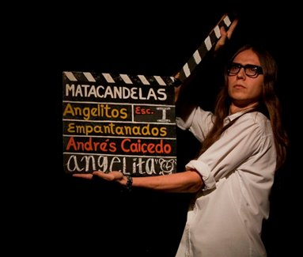
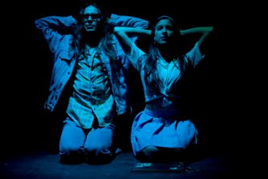
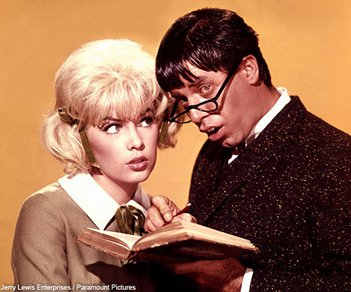
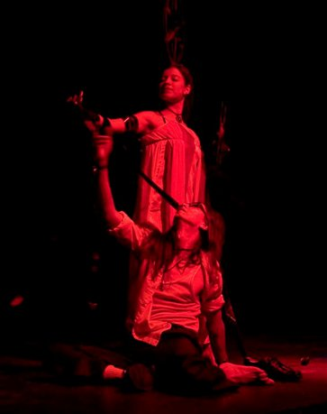

Mi segunda vez con Andrés
Por María Camila López Isaza
Doy inicio a este texto confesando que no han sido pocos los días en los que he estado pensando cómo poner en palabras, de la manera más fidedigna posible, el significado de esta segunda experiencia con Andrés Caicedo. Tal vez el principal motivo sea lo inabordable y compleja que se me ha vuelto su obra. Sin embargo, hoy, pasado más de un mes desde que vi Angelitos, le doy la cara al torrente de preguntas que supone para mí cada encuentro con este autor. Vamos pues, por el tercer intento.

Uno pensaría que la segunda vez (sin importar con qué o con quién) no refleja con igual intensidad las expectativas, el deseo de exploración y la adrenalina que sí genera una primera, o por qué no, una última vez: ya no existe esa disposición ingenua y temerosa ante lo nuevo, lo desconocido; la espera no se hace tan excitante y el factor sorpresa casi que desaparece por completo. Con Angelitos Empantanados, me atrevería a decir todo lo contrario. Explicaré por qué.
Después de ese anecdótico pero especial primer encuentro con Los diplomas, salí, como que creo que muchos lo han hecho, a seguirle el rastro literario a Andrés. Ese mismo día había comprado Que viva la música así que, sin esperar, me introduje por vez primera en las deliciosas páginas caicedianas. Me gustó. Tanto así, que después vendrían uno y otro, y otro artículo, hasta llegar a la inaplazable cita con Angelita y Miguel Ángel.
Tal fue mi suerte que por esos días, aún sin terminar el libro, se acercaba la presentación de la adaptación teatral a cargo del Matacandelas, esta vez en Casa Teatro el Poblado. Supe, desde antes de comprar la boleta, que este encuentro sería, en varios aspectos, diferente.
Primero, no iría sola. Después de haber tenido ya una oportunidad íntima y personal, sentía la necesidad de que otros se vieran golpeados y sumergidos, aunque fuera simplemente por una noche, en el universo de los personajes de Andrés. No lo pensé dos veces para invitar a algunos amigos.
Y segundo, en esta ocasión ya no estaba completamente desnuda ante las palabras de este polifacético autor. Haberlo leído, sin duda, ampliaba el panorama, me permitía disfrutarlo de cerca, a conciencia, y deleitarme con el retrato de una Cali que me encanta y que, fuera de sus páginas, nunca hubiera imaginado.
La llegada al teatro fue larga y sobre la hora: nada agradable para esta victimaria ansiedad que hace años me tiene de presa. Finalmente entramos, cuando las luces estaban por apagarse. Comienza la obra. Se escucha “Agúzate” de Richie Ray y Bobby Cruz y… al estimado lector le aseguro -como diría Caicedo- que aquí sí no sé cómo hacer una descripción que me deje satisfecha, sobre la ráfaga de sensaciones que se me estaba viniendo encima. La música sí es una cosa muy poderosa, eso no lo discuto…
¡¡AY, QUÉ GANAS DE ESTAR EN CALI!!
No entraré en detalle sobre el vestuario y la escenografía. Tratándose del Matacandelas –y siendo consciente de mi notable con el teatro-, sé que no me equivoco al decir que ambos aspectos son siempre un dúo poderoso dentro de sus montajes.

Es mejor hablar de la esencia de esta segunda vez: una suerte de revelación y, diría yo, el inicio de un fatídico enamoramiento de Andrés Caicedo, y una creciente admiración al trabajo del Matacandelas. ¿La razón? Hay en ambos una exploración constante del estado más humano, inquietante, y quizá el impulso más grande de cualquier búsqueda emprendida por el hombre: la insatisfacción. No creo que haya un capítulo de nuestro destino cuyo inicio y final no estén acompañados de dos imponentes signos de interrogación. Dudo mucho que las innumerables peguntas que nos hacemos a lo largo de nuestra existencia no condicionen siempre nuestra forma de pensar, de hacer, de sentir, de amar… Cuando creía que las páginas caicedianas serían mero entretenimiento y un divertido reflejo de mi juventud, me encuentro con una literatura compleja y enteramente real; con un lenguaje cercano, sin pretensiones explícitas, pero con un latente sentido de crítica hacia las condiciones sociales de la época (es esa forma de hacer de la crítica un subtexto, algo no tan evidente a primera vista, una de las muchas cosas que hace tan interesante su lectura). Quizás Andrés supo observar muy bien a su Cali de los años 60. Pero, ¿sabría que sus relatos, cuarenta años después, no distan mucho de la realidad que hoy nos aflige? Hay diferencias, claro está; sin embargo, esos angelitos insatisfechos, solitarios, desamparados no económica (aunque algunos –muchos- sí) sino emocionalmente, embrutecidos por el mercado y las modas, con su espíritu progresista retenido por la misma sociedad…esos angelitos abundan en las calles del nuevo milenio. La genialidad de este precoz intelectual está en tomar esa crueldad que es nuestra realidad, y servirse del cine, la música y las calles de su ciudad, para dar vida y lugar a sus personajes… para darse él mismo vida y lugar en este mundo.
Esculcar su obra es darse cuenta de que ninguna de sus aficiones por íconos del rock o la salsa, y ninguna de sus obsesiones con varias figuras del séptimo arte, fueron gratuitas. Todos, de alguna manera, tuvieron una presencia decisiva en su narrativa. En un artículo de su autoría incluido en la publicación Ojo al cine, Andrés -pese a su incalculable y conocido gusto por las películas western y de horror- resalta durante todo el texto, la figura del comediante estadounidense Jerry Lewis. Y, como bien sabe hacerlo, relaciona el trabajo de este actor con la vida de tanto adolescente que creció viendo sus personajes. Aquí, el fragmento que me obligo a compartir:

“En los años sesenta Jerry Lewis era la figura que regulaba nuestra impedida adolescencia: memorizábamos los colorinches de su ropa, deseábamos el rubio o el renegrido pelo de sus heroínas, nos enquistábamos en aquel pesado ambiente juvenil de sus comedias; ni nos inmutamos cuando Jerry pasó de la casi acrobacia a las muecas y al maquillaje: para nosotros seguía siendo el mismo. Y cuando malcrecimos vinimos a comprobar que su torpeza no solo era la nuestra, sino que la había inventado para nosotros, para que nosotros la copiáramos y nos justificáramos en su genio. La torpeza deviene de una conciencia de ser observado, y esta, de concederle una importancia exagerada a las personas y al mundo que habitamos[…] creemos, entonces, que estamos destinados a la falta de afecto, de reconocimiento, y quisiéramos no que la tierra nos tragara, sino convertirnos en otro, en aquel que sepa aprovechar la mínima parte correcta de nuestra naturaleza […] De todos modos, las mitificaciones que ha realizado de sus actrices evidencian un atortolado amor de adolescente culpable, y este es el rasgo más importante de sus películas. Porque nosotros también guardamos la culpa, envuelta en gozo, de admirar a un cineasta que nadie admira, al último gran cómico de nuestra época, autor y mártir de su propia sede de geniales inventos”.
Si el primer encuentro con Andrés fue una mirada cándida a su universo literario, esta segunda cita es para mí la entrada a un Calicalabozo donde habitan plácidamente la adolescencia, la tragedia y la confusión, detrás de pequeños -o grandes- escudos de inteligente comedia. Recuerdo que viendo esa noche al Matacandelas (y ahora me pasa cada vez que asisto a una de sus obras) sufría por momentos cierta impotencia, como una zozobra por saberme incapaz de dilucidar como quisiera el estremecimiento (encontré la belleza y la verdad de esa palabra yendo a ver teatro) físico y espiritual que despertaba al escuchar temas como Wild Horses, House of the Rising Sun y la ya mencionada pero siempre enloquecedora Agúzate. Mis ojos, perdidos en el escenario, seguían inquietos cada movimiento. ¡Un deleite total para el alma!

Estos “aventureros del teatro” son plenamente conscientes de que un buen montaje no se limita a una extravagante escenografía o a la simple memorización de los textos (lamentablemente muchos consideran que en eso se resume la labor teatral). Uno se sienta a apreciar por primera vez una de sus puestas en escena, y sabe que es justo y necesario ir a verla de nuevo. De principio a fin, hay un reto importante para el espectador; una invitación cariñosa y cordial a dejarse llevar, a meterle cuerpo, mente y espíritu a los diálogos, a la música, y a las emociones -todas diversas, todas únicas; creo que sin ellas no existiría una experiencia teatral-.
Sin embargo, todo esto es superfluo e incluso imposible, cuando no hay un proceso detrás que dé cuenta de un estudio comprometido del autor, de una conexión con su sicología, con su drama -así lo que escriba sea comedia-, con sus demonios…Con su alma. Es un recorrido previo al montaje, ‘tras bambalinas’ pero, a la hora de la verdad, cada instante de la puesta en escena será un reflejo de la profundidad de ese estudio. Creo que hasta el espectador más novato -entre los que me incluyo - es capaz de percibir si hay disciplina, pasión, complicidad y sacrificio en un grupo de actores, o no.
Desde los extensos monólogos de Angelita, Miguel Ángel y el pretendiente, hasta las breves pero sustanciosas apariciones de Irma la dulce, Carevaca o Berenice, era posible reconocer un proceso investigativo serio y exhaustivo de quien los escribió. Pero lo que es aún más bello, es que no hubo un solo momento de la obra, en el que no sintiera la voz de Andrés puesta cuidadosa y delicadamente sobre todos y cada uno de los actores. Podré no saber mucho, pero eso para mí es teatro.
Encontrarme con el Matacandelas y con Andrés Caicedo es de esas coincidencias que uno agradece a la vida y que reclama no haber tenido antes (prefiero pensar que era este el momento indicado para encontrarnos). Es un enfrentamiento constante con los diversos matices y conflictos de mi propia existencia. Es un camino de nunca acabar por esto que se llama vida, acompañada de una terna ideal: arte, literatura y “unos pocos buenos amigos” ¡Ah, y música!.. ¡Imperdonable sería olvidar la música!
Es gracioso cómo ahora, cada vez que escucho el “Jala jala” o “Sonido bestial”, aparte de que me cogen tremendas ganas de bailar, pienso inmediatamente en una Cali que no conozco, pero que con gusto me imagino; en un mechudo de veintitantos que no se separa de su máquina de escribir; en una rubia rubísima que marca el paso mientras camina por la Sexta… Se me viene un olor a calle, un anhelo de noche, de fiesta y de goce.
Esta segunda vez con Andrés es la confirmación de que, después de pasar por libros, artículos, un documental, obras de teatro… cuando creo que lo tengo y lo entiendo, ¡vuelve y se me escapa! Pero me alegra: esta situación asegura la larga relación que me espera con su obra. Leerlo en un mes, dos años, tres décadas o más, será una experiencia completamente nueva. Cada vez será una primera vez. Quizá sus palabras permanezcan intactas en el tiempo, pero indudablemente yo no seré la misma. Y es algo que me llena de expectativas: intrigantes y exquisitamente peligrosas expectativas. Como diría Sandro Romero Rey, no todo está dicho con relación a este autor, y a mí me falta bastante con Andrés. Su literatura, gracias al trabajo del Matacandelas, y a la curiosidad y el afecto de sus lectores, estará ahí, siempre fuerte
SIEMPREVIVA